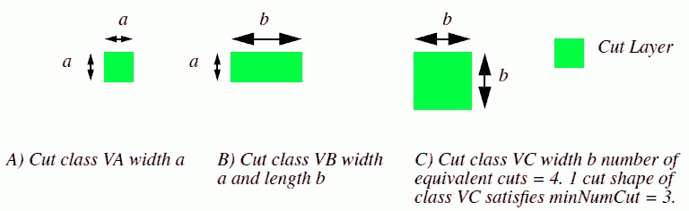

|
 |
 |
||||||
|
|
|
||||||
Many new processes allow different cut sizes on the same cut layer. Some cut sizes are expected to be of an exact viaWidth and viaLength. Others allow a fixed width and a variable length. Design rules refer to these different cut sizes as different cut classes, and assign a different className to each cut class.
The design rules also specify how many equivalent cuts or numCuts should be used for a given cut class in resistance calculations.
| Constraint type: | oaLayerConstraint |
| Value types: | oaDualIntValue |
| Database types: | oaDesign, oaTech |
| Object types: | oaAppObject |
The following value types are supported by this constraint:
This value refers to the viaWidth and viaLength of the cutClass.
Units: DBU
The following parameters are supported by this constraint:
| Name | Value Type | Units | Default | Description |
|---|---|---|---|---|
| className oacClassNameConstraintParamType |
oaStringValue | DBU | (Required) |
This parameter refers to the name of the cutClass. |
| numCuts oacNumCutsConstraintParamType |
oaIntValue | Count | (Required) |
This parameter specifies the number of equivalent cuts or numCuts for a given cut class. |
| viaWidthMin oacViaWidthMinConstraintParamType |
oaBooleanValue | Boolean | False |
If this parameter is set to false, width of the via has to be exactly the same as the constraint value. If the parameter is true, then the constraint value is the minimum allowed width of the via. |
| viaLengthMin oacViaLengthMinConstraintParamType |
oaBooleanValue | Boolean | False |
If this parameter is set to false, length of the via has to be exactly the same as the constraint value. If the parameter is true, then the constraint value is the minimum allowed length of the via. |

Copyright 2002 - 2010 Cadence Design Systems, Inc.
All rights reserved.